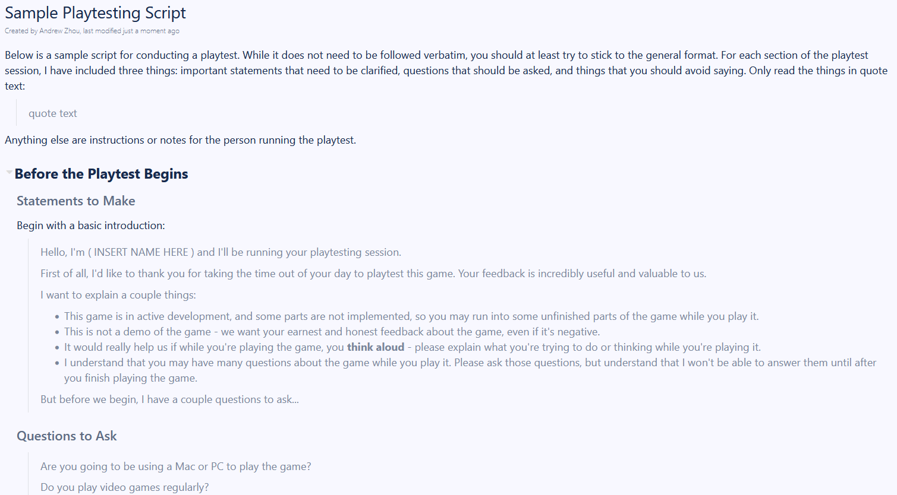

Pre-Beta 1
Nov 1 to Nov 14 - Coroutines Are the Bane of My Existence
For these two weeks, my primary tasks were concerned with the user interface of the game - updating the look of the game from that of a rapidly slapped together project to something more sleek and presentable. While I was not able to accomplish all of my work this week, I made significant progress in some aspects of it, and will continue to work on user interface improvements going forward.
Programming and Development (17 Hours)
Programming and development took up the bulk majority of my time these two weeks. The significant majority of that was spent implementing some of my previously made UI documentation into reality. The two areas I decided to focus in on for this sprint was the main menu and the credits, as the main game screen and the visual novel screen were being handled by other developers at the time.
Narrative Iteration


Upgrades and Main UI
For now, the code works. And hopefully nobody complains about it (I see you, Professor Yarger). Below, I've included some images and gifs showing my progress in creating the main menu, as a means of showing the iterative process of building this screen from concept to reality.


Documentation (2 Hours)
In preparation for non-industry, non-studio playtesting to begin after the sprint, I spent some time building a sample playtesting script that members could use when running playtests. This was largely motivated by the fact that I've been in four classes that have taught me how to do this and you can bet I'm going to try and apply that, but also because I'm sometimes unsatisfied with the way we conduct industry playtests. While I understand that these people know who we are and are somewhat familiar with the projects we're working on, I think that some actions taken during these playtests (discussing elements of the game while the player is playing, explaining concepts, answering questions during gameplay, in short, treating the session as a demo and not an actual playtest) could lead to bad practices when conducting playtests with non-industry members.
Meetings (4 Hours)
I spent four hours of my time in various studio meetings, the majority of which were the main weekly meetings on Sundays. Not much to say here.
Playtesting (1 Hour)
I've been pretty busy, and while I wasn't really able to play much Bloons, I did spend time watching other people play Bloons. I tried to note what other people focused on, as well as the UI of the game itself.